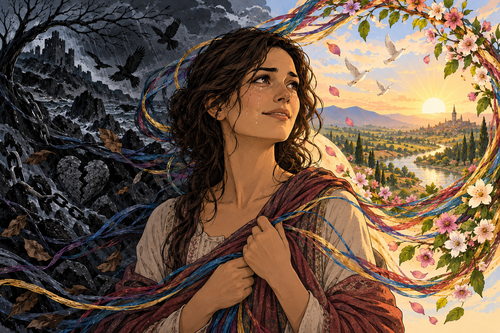

With death and birth,
The down and the up,
The left and the right,
The cold and the hot,
The negative and the positive,
The black and the white,
The dark and the light,
The false and the truth,
The bitter and the sweet,
The pain and the pleasure,
The hate and the love,
These are jowls of opposites, extremes in our thinking and feeling
and are the ways and means we awaken an experience for our minds to our true hearts desire,
For with the mix of the relative is a gladness and sadness;
And even though sometimes the despair can be so deep and bleak,
And almost too shady, murky to be able to speak, to any soul,
Yet when the energy shifts from pole to pole in a gentle moment of clarity,
A warm understanding pervades which gives us a radiant glow,
And with almost full satisfaction does our mortal being grow,
And it is the range of the lows and highs for which we seek to be here and now,
An awareness from the One to live in the present moment,
And with all these moments we can pick and choose from and not with limits:
An outraged anger enough to boil the blood,
A deep felt hurt and tearful burdened sorrow,
Or perhaps the joyful touch of a loving ecstasy, prickling delight into our sensitive skin
and with warm goosepimplies will we swoon,
Nay even, maybe couples torn apart with the grief of a love unanswered or simply lost,
But we can always submit to God’s gift of loving bliss.
These feelings form the emotional tapestry of our oceans being,
Moving with turbulent, ragged, raging tides and the wax
and the wane of a full to empty: silvery, bright, sparkling, smiling, moon.
Our feelings do interchange and with all this insane flux we know ourselves to be alive and kicking,
awash in a continually creative and destructive, ever changing, universe,
With that let us pray for a clear crystal vision
and hope our hearts will fill with a loving mission,
to find our truth and hopefully our eternal youth.